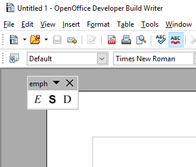

After installing the extension and restarting the office application, you will see a small toolbar.

You can dock it to a suitable place on the user interface.
There are two buttons: E for emphasize and S for strong emphasize.


In the Help section of the main menu, there is a emph help submenu.